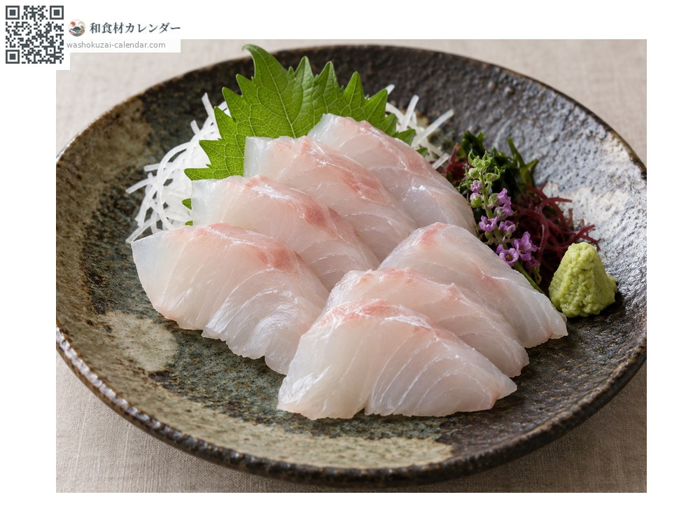
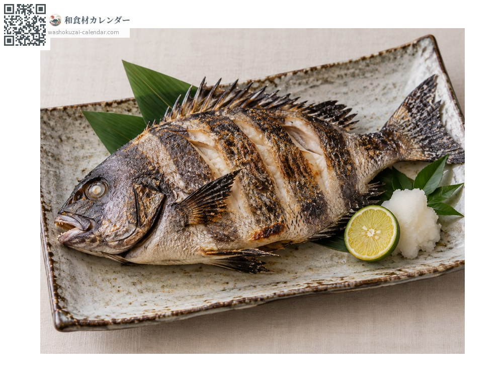
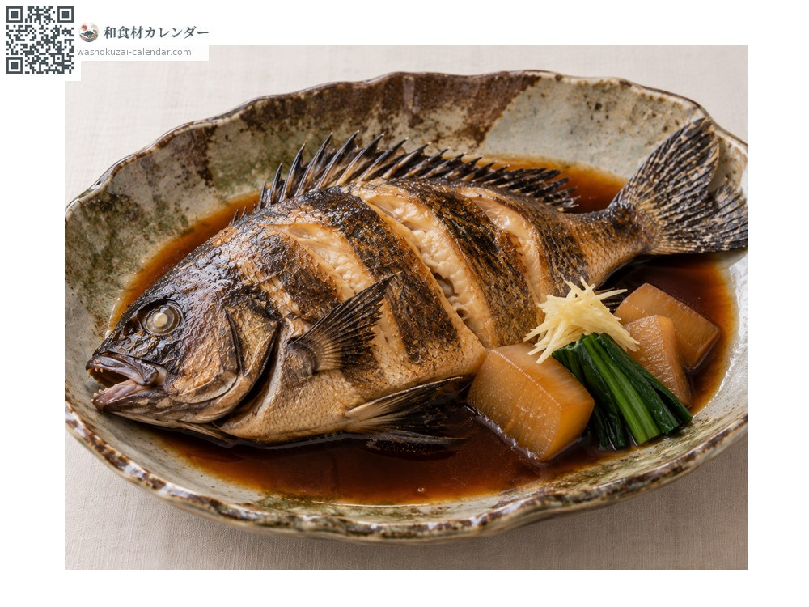
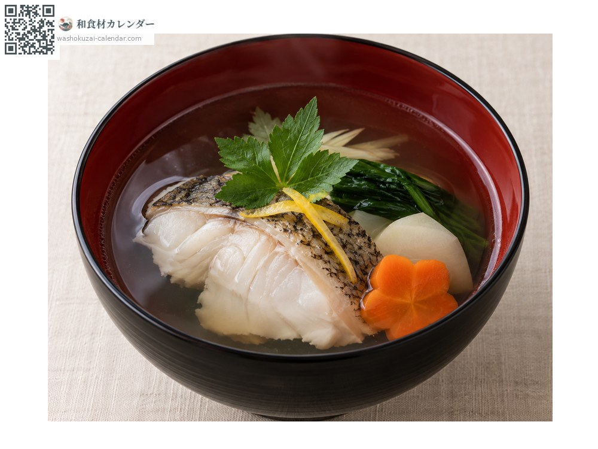

海鮮
條石鯛
イシダイ いしだい ishidai
別名ishidai
當令時期為6月、7月、8月

當令時期
1月
2月
3月
4月
5月
6月
7月
8月
9月
10月
11月
12月
當令有供應
料理方式

生魚片
在白肉魚中口感特別紮實。切成薄造更能凸顯彈性。

鹽烤
魚皮那面烤得焦香。皮下帶有鮮味。

甜醬油燉煮
甜鹹燉煮。骨頭能熬出好湯頭。

清湯
魚頭魚骨能熬出清澈高雅的湯頭。
挑選方式
條紋清楚、魚身緊實。眼睛清澈，喙狀的牙齒完整。
保存方式
肉質緊實所以耐放。取出內臟後冷藏，兩到三天內用完。
主要產地
小知識
幼魚身上有七條清楚的黑色橫紋，長大後會變淡；年老的公魚嘴部轉黑，稱為「黑嘴」。牙齒強韌，能咬碎貝類與海膽的硬殼。